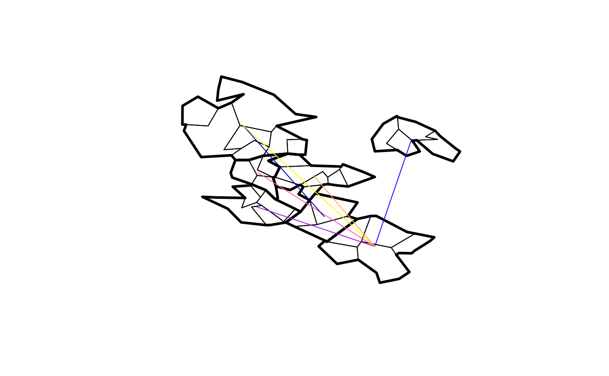
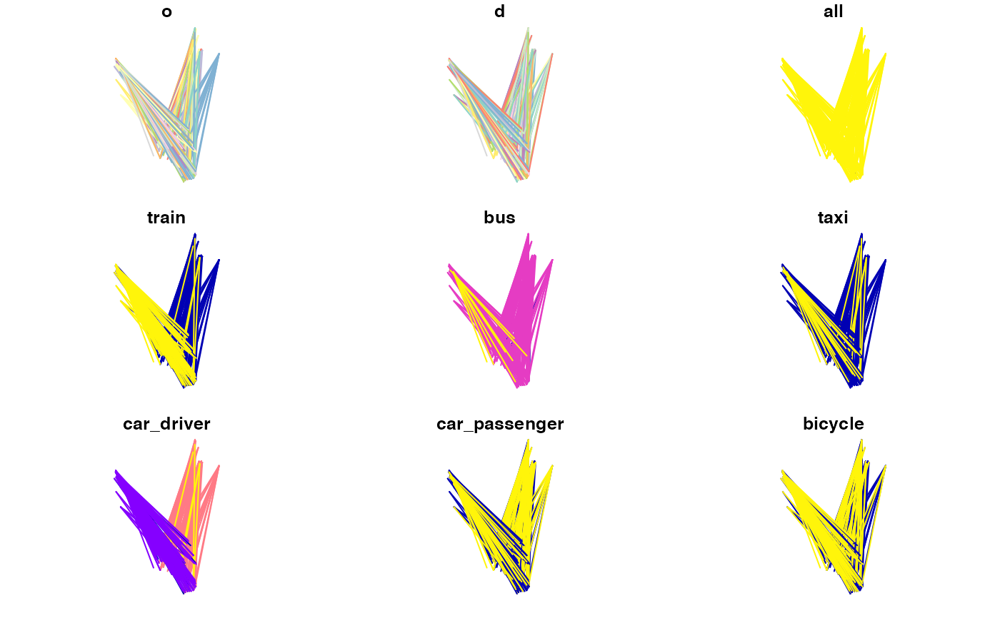
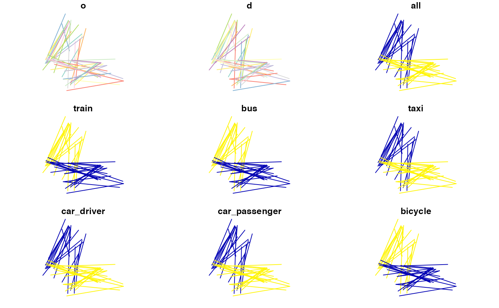

R/aggregate.R
od_disaggregate.RdThis function is for splitting-up OD pairs.
It increases the number of rows in an OD dataset, while aiming
to keep the amount of travel represented in the data the same.
To take an analogy from another package, it's roughly equivalent
to tidyr::pivot_longer().
od_disaggregate( od, z, subzones = NULL, subpoints = NULL, code_append = "_ag", population_column = 3, max_per_od = 5, keep_ids = TRUE, integer_outputs = FALSE ) od_split( od, z, subzones = NULL, subpoints = NULL, code_append = "_ag", population_column = 3, max_per_od = 5, keep_ids = TRUE, integer_outputs = FALSE )
| od | An origin-destination data frame |
|---|---|
| z | Zones representing origins and destinations |
| subzones | Sub-zones within the zones defining the OD data |
| subpoints | Points within the zones defining the OD data start/end points |
| code_append | The name of the column containing aggregate zone names |
| population_column | The column containing the total population (if it exists) |
| max_per_od | Maximum flow in the population_column to assign per OD pair. This only comes into effect if there are enough subpoints to choose from. |
| keep_ids | Should the origin and destination ids be kept?
|
| integer_outputs | Should integer outputs be returned? |
An alias for the function is od_split().
od = od_data_df[1:2, c(1, 2, 9)] od #> geo_code1 geo_code2 bicycle #> 1 E02002384 E02006875 13 #> 2 E02002404 E02006875 10 zones = od::od_data_zones_min od_sf = od_to_sf(od, zones) #> 0 origins with no match in zone ids #> 0 destinations with no match in zone ids #> points not in od data removed. set.seed(2021) # for reproducibility od_disag = od_disaggregate(od, zones) #> Creating randomly sampled origin and destination points. od_disag2 = od_disaggregate(od, zones, max_per_od = 11) #> Creating randomly sampled origin and destination points. plot(zones$geometry) plot(od_sf$geometry, lwd = 9, add = TRUE) plot(od_disag$geometry, col = "grey", lwd = 1, add = TRUE) plot(od_disag2$geometry, col = "green", lwd = 1, add = TRUE)  table(od_disag$o_agg, od_disag$d_agg) #> #> E02006875 #> E02002384 3 #> E02002404 2 # integer results od_disaggregate(od, zones, integer_outputs = TRUE) #> Creating randomly sampled origin and destination points. #> Simple feature collection with 5 features and 5 fields #> Geometry type: LINESTRING #> Dimension: XY #> Bounding box: xmin: -1.557405 ymin: 53.7873 xmax: -1.515148 ymax: 53.81147 #> Geodetic CRS: WGS 84 #> o d bicycle o_agg d_agg geometry #> 1 2 9 4 E02002384 E02006875 LINESTRING (-1.556161 53.81... #> 2 1 6 4 E02002384 E02006875 LINESTRING (-1.534144 53.80... #> 3 3 8 5 E02002384 E02006875 LINESTRING (-1.552041 53.81... #> 4 4 10 5 E02002404 E02006875 LINESTRING (-1.533423 53.79... #> 5 5 7 5 E02002404 E02006875 LINESTRING (-1.515148 53.78... # with more trips per disaggregated OD pair: disag = od_disaggregate(od_data_df[1:2, ], z = zones, max_per_od = 50) #> Creating randomly sampled origin and destination points. plot(disag[0])  # with subpoints subpoints = sf::st_sample(zones, 1000) od_disag_subpoints = od_disaggregate(od, zones, subpoints = subpoints) # with buildings data od_disag_buildings = od_disaggregate(od, zones, od_data_buildings) #> Converting subzones to centroids summary(od_disag_buildings) #> o d bicycle o_agg #> Length:5 Length:5 Min. :4.333 Length:5 #> Class :character Class :character 1st Qu.:4.333 Class :character #> Mode :character Mode :character Median :4.333 Mode :character #> Mean :4.600 #> 3rd Qu.:5.000 #> Max. :5.000 #> d_agg geometry #> Length:5 LINESTRING :5 #> Class :character epsg:4326 :0 #> Mode :character +proj=long...:0 #> #> #> plot(od_disag_buildings) # mapview::mapview(od_disag_buildings) od = od_data_df[1:2, 1:4] subzones = od_data_zones_small try(od_disaggregate(od, zones, subzones)) #> Converting subzones to centroids #> Warning: Insufficient subzones/points to prevent duplicate desire lines #> Sampling may fail. Try again with larger max_per_od #> Error in sample.int(length(x), size, replace, prob) : #> cannot take a sample larger than the population when 'replace = FALSE' od_disag = od_disaggregate(od, zones, subzones, max_per_od = 500) #> Converting subzones to centroids ncol(od_disag) -3 == ncol(od) # same number of columns, the same... #> [1] TRUE # Except disag data gained geometry and new agg ids: sum(od_disag[[3]]) == sum(od[[3]]) #> [1] TRUE sum(od_disag[[4]]) == sum(od[[4]]) #> [1] TRUE plot(od_disag) 